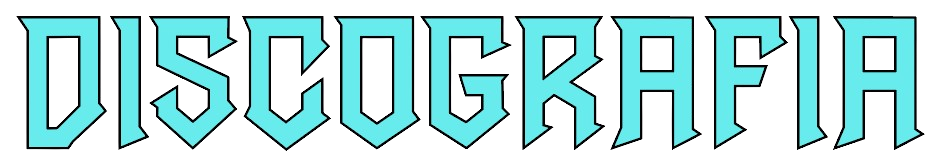
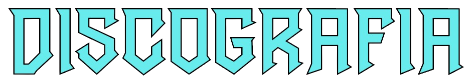

1980s
Def Squad, Texas
1990s
1992
Bushwick Bill – Little Big Man
UGK – Too Hard to Swallow
Willie D – I'm Goin' Out Lika Soldier
1993
5th Ward Boyz – Ghetto Dope
Ganksta NIP – Psychic Thoughts
DMG – Rigormortiz
1994
5th Ward Boyz – Gangsta Funk
Big Mello – Wegonefunkwichamind
Big Mike – Somethin' Serious
Blac Monks – Secrets of the Hidden Temple
Odd Squad – Fadanuf Fa Erybody!!
Scarface – The Diary
1995
5th Ward Boyz – Rated G
Jamal – Last Chance, No Breaks
Menace Clan – Da Hood
1996
3-2 – The Wicked Buddah Baby
Do or Die – Picture This
Facemob – The Other Side of the Law
Ganksta NIP – Psychotic Genius
Geto Boys – The Resurrection
1997
3X Krazy – Stackin Chips
Big Mike – Still Serious
Scarface –The Untouchable
Seagram – Souls on Ice
1998
A-G-2-A-Ke – Mil-Ticket
Devin the Dude – The Dude
Do or Die – Headz or Tailz
Ganksta NIP – Interview with a Killa
Yukmouth – Thugged Out: The Albulation
2000s
C-Bo – Enemy of the State
Outlawz – Ride wit Us or Collide wit Us
Scarface – The Last of a Dying Breed
2001
Oz (soundtrack)
Tha Dogg Pound – Dillinger & Young Gotti
Yukmouth – Thug Lord: The New Testament
Sherm – Sherm Smoke
2002
Big Syke – Big Syke
Daz Dillinger – This Is the Life I Lead
Devin the Dude – Just Tryin' ta Live
E-40 – Grit & Grind
Hussein Fatal – Fatal
Kastro & E.D.I. Mean – Blood Brothers
King T – The Kingdom Come
Scarface – The Fix
Young Noble – Noble Justice
2003
Yukmouth – Godzilla
2004
Z-Ro – The Life of Joseph W. McVey
Shyne – Godfather Buried Alive
Kanye West – The College Dropout
2005
Geto Boys – The Foundation
Pimp C – Sweet James Jones Stories
Z-Ro – Let the Truth Be Told
Kanye West – Late Registration
2006
Juvenile – Reality Check
Pimp C – Pimpalation
Z-Ro – I'm Still Livin'
2007
Kanye West – Graduation
Scarface – Made
2008
Kanye West – 808s & Heartbreak
2009
Mike Jones – The Voice
UGK – UGK 4 Life
2010s
Kanye West – My Beautiful Dark Twisted Fantasy
Kid Cudi – Man on the Moon II: The Legend of Mr. Rager
Z-Ro – Heroin
2011
Jay-Z & Kanye West – Watch the Throne
2012
GOOD Music – Cruel Summer
2013
Beyoncé – Beyoncé
Jay-Z – Magna Carta Holy Grail
Kanye West – Yeezus
Angel Haze – Dirty Gold
Travis Scott – Owl Pharaoh
2014
Travis Scott – Days Before Rodeo
Freddie Gibbs & Mike Dean – "Sellin’ Dope"
2015
Madonna – Rebel Heart
Travis Scott – Rodeo
The Weeknd – "Where You Belong"
Freddie Gibbs – Shadow of a Doubt
The Weeknd – Beauty Behind the Madness
Justin Bieber – No Sense
2016
Beyoncé – Lemonade
Kanye West – The Life of Pablo
Desiigner – New English
Frank Ocean – Endless
Frank Ocean – Blonde
Travis Scott – Birds in the Trap Sing McKnight
Ty Dolla Sign – Campaign
Yung Lean – Warlord
2 Chainz – Hibachi for Lunch
Kid Cudi – Passion, Pain & Demon Slayin'
Z-Ro – Legendary
2017
2 Chainz – Pretty Girls Like Trap Music
Vic Mensa – The Autobiography
Lunice – CCCLX
Ty Dolla Sign – Beach House 3
Huncho Jack – Huncho Jack, Jack Huncho
2018
AJ Mitchell – "Used to Be"
Migos – Culture II
Desiigner – L.O.D.
Pusha T – Daytona
Kanye West – Ye
Dermot Kennedy – Mike Dean Presents: Dermot Kennedy
Kids See Ghosts – Kids See Ghosts
Christina Aguilera – Liberation
Nas – Nasir
The Carters – Everything Is Love
Teyana Taylor – K.T.S.E.
Travis Scott – Astroworld
Genetikk – Y.A.L.A
2019
2 Chainz – Rap or Go to the League
Madonna – Madame X
Maxo Kream – Brandon Banks
Kanye West – Jesus Is King
City Morgue – City Morgue Vol 2: As Good as Dead
Smokepurpp – Deadstar 2
Sunday Service Choir – Jesus Is Born
JackBoys & Travis Scott – JackBoys
2020
Selena Gomez – Rare
070 Shake – Modus Vivendi
Don Toliver – Heaven or Hell
Teyana Taylor – The Album
Pop Smoke – Shoot for the Stars, Aim for the Moon
Burna Boy – Twice as Tall
Spillage Village, JID & EarthGang – Spilligion
2 Chainz – So Help Me God!
Kid Cudi – Man on the Moon III: The Chosen
2021
Kanye West – Donda
Lana Del Rey – Blue Banisters
Don Toliver – Life of a Don
Mike Dean & Rich the Kid – "Blue Cheese"
Aaliyah featuring the Weeknd – "Poison"
2022
FKA Twigs – Caprisongs
Kanye West – Donda 2
Fivio Foreign – B.I.B.L.E.
Pusha T – It's Almost Dry
Megan Thee Stallion – "Plan B"
Weiland – Vices
Kanye West & XXXTentacion – "True Love"
070 Shake – You Can't Kill Me
XXXTentacion – Look at Me: The Album
The Weeknd – "Starry Eyes" (Mike Dean remix)
Beyoncé – Renaissance
The Game – Drillmatic – Heart vs. Mind
Nav – Demons Protected by Angels
Christine and the Queens – Redcar les adorables étoiles (prologue)
2023
Quavo – "Without You"
The Weeknd featuring Future – "Double Fantasy"
Christine and the Queens – Paranoia, Angels, True Love
Metro Boomin – Spider-Man: Across the Spider-Verse (soundtrack)
The Weeknd, Playboi Carti & Madonna – "Popular"
The Weeknd – "Take Me Back"
The Weeknd & Suzanna Son – "Family"
The Weeknd, Jennie & Lily-Rose Depp – "One of the Girls"
Travis Scott – Utopia
2 Chainz & Lil Wayne – Welcome 2 Collegrove
2024
Future & Metro Boomin – We Don't Trust You
Future & Metro Boomin – We Still Don't Trust You
Mau P – On Again
The Weeknd & Playboi Carti – "Timeless"
 
